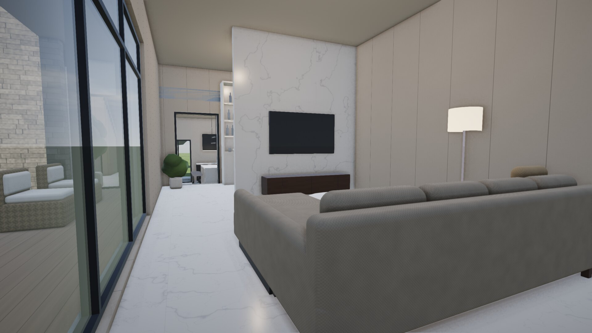

1. ห้องรับแขก


ดูคำสั่ง
Transform this 3D render into a photorealistic architectural interior photograph. KEEP EXACTLY the same camera angle, room layout, wall and opening positions, furniture types, positions and proportions, and the same materials and colors — do not add, remove or move any object, do not change the architecture. Only upgrade realism: physically accurate soft natural daylight with global illumination and soft shadows, realistic textures and micro-detail, subtle reflections on glossy surfaces, warm 3000K accent lighting where LED strips exist, natural fabric folds, slight depth of field, shot on a full-frame camera with a 24mm lens at eye level, high-end interior design magazine style, 4K. No people, no text, no watermark. Living room: large L-shaped sofa in warm grey fabric facing a full-height Calacatta-style white marble partition wall with a wall-mounted TV and a low dark walnut TV console; greige matte painted walls divided into vertical panels with thin recessed grooves every 60 cm; light grey marble-look 60x120 porcelain floor; recessed linear LED strip in the ceiling; tall black aluminium sliding glass doors on the left opening to a timber veranda; brass floor lamp.